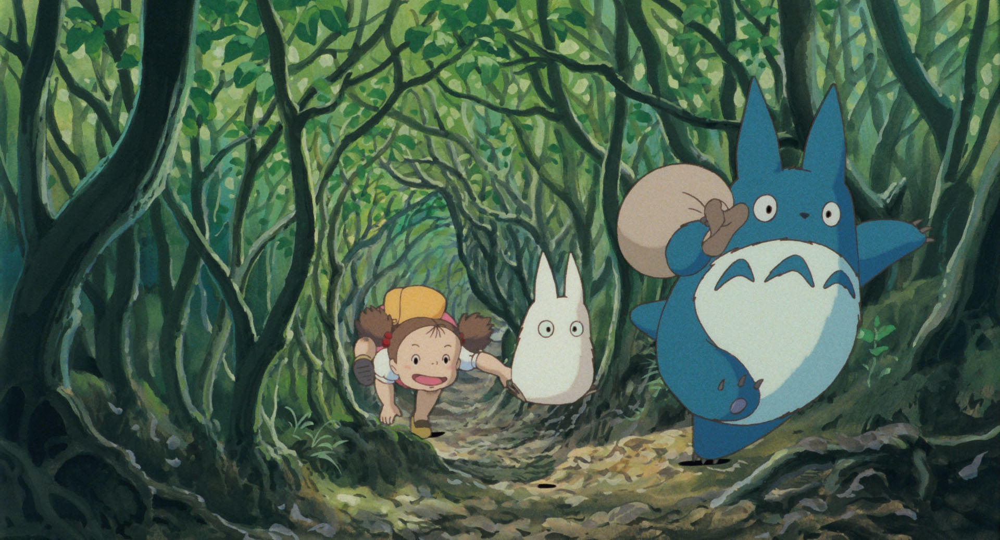

| 原作・脚本・監督 | 宮崎 駿 |
|---|---|
| 音楽 | 久石 譲 |
| 主題歌 | 井上あずみ |
| 声の出演 |
日高のり子 ⋅ 坂本千夏 ⋅ 糸井重里 ⋅ 島本須美 ⋅ 北林谷栄 ⋅ 高木 均 |
| 上映時間 | 約86分 |
| 配給 | 東宝 |
| 公開日 | 1988.4.16（土） |
昭和30年代前半の初夏 (5月)
。小学生のサツキと、幼い妹のメイ、父の三人が、入院中の母の病院の近くであり、空気のきれいな所で暮らすため、農村へ引っ越してくる。引越し先の古い家を探検していたサツキとメイは、ピンポン球程の真っ黒なかたまりがたくさん住み着いているのを見つける。驚いた二人に対し、引っ越しの手伝いに来ていた隣のおばあちゃんが、それはススワタリというもので、子供にしか見えず、害もなく、人が住み始めるといつの間にかいなくなるのだと教えてくれる。この家で三人は新しい生活を始める。
...
小学校が田植え休みになった6月のある日、三人は入院している母の見舞いに行き、新しい家がおばけ屋敷だったと伝える。サツキとメイは母がおばけ嫌いである事を心配していたが、母は少しも怖がらず「自分もおばけに会いたい」と言ってくれる。ほっとした二人は、母が早く退院していっしょに暮らせる事を願う。
そんなある日、一人で庭で遊んでいたメイはドングリを持つ不思議な小さな生き物を二匹見つける。追いかけていったメイが、家の隣の塚森の中心の大きなクスノキの所まで行き、根元に開いた深い穴の入り口でドングリを見つけ、拾おうとして穴の中に転がり落ちると、穴の底にぽっかり開いた空間にずっと大きな生き物が寝ていて、メイが名前を聞くと生き物は何かつぶやくがそれがメイには"トトロ"と答えたように聞こえる。やがてトトロの腹の上でトトロといっしょに寝てしまったメイは、その後、庭と森の境の茂みの中で一人で寝ている所をサツキに発見され、起こされる。メイはサツキと父にもトトロを見せようとするが、トトロがいた場所が見つからない。二人が笑い出したため腹を立てたメイに対し、父は「トトロはきっとこの森の主で、いつでも会える訳ではないのだ」と優しく教え、三人で塚森へ向かうと「これからもよろしくお願いします」と引っ越しのあいさつをする。その晩、サツキは母あての手紙にこの時の出来事を書き記し、自分もトトロに会ってみたいと添える。
梅雨の季節となったある日の事。その日は父が大学へ行くためサツキはメイを隣の家に預けて学校に向かう。ところが午後の授業が始まった矢先、姉を恋しがったメイを連れたおばあちゃんの姿を校門で見つけ、仕方なく先生の許しを得てメイを教室に入れてもらい残りの2限をやり過ごす事になる。
そして放課後の帰り道。次第に雲行きが怪しくなりとうとう雨が降り出してしまった。二人は慌てて地蔵がある屋根付きの祠
(ほこら)
に逃げ込み雨宿りをするが勢いは止まらず、困り果てている所へ通りかかったカンタが無言で自分の傘を差し出す。サツキはとまどいながらも「そっちがぬれちゃうからいい」と遠慮すると、今度は傘をその場に置いたまま無言で駆け出して行ってしまった。傘を差して帰路に着く中、サツキはカンタを案外いい子なのかもしれないと見直す。
そして夕暮れ時、借りた傘を返しがてら同じく傘を持たないまま行ってしまった父を迎えに行くため、最寄りのバス停に向かうも一向に来ず、サツキは途中で待ちくたびれ寝てしまったメイをおんぶしながら帰りを待つも、次第に辺りが暗くなってくる。すると大トトロが静かにやって来て二人の隣にのそりと立つ。ずぶぬれのトトロを見かねてサツキが父の傘を貸してやると、トトロは傘に落ちる雨粒の音を気に入ってしまったらしく、それを持ったままお礼に木の実が入ったササの葉の包みを渡し、バスの姿をしたネコ（ネコバス）に乗って行ってしまう。帰宅した二人は木の実を庭にまいたがなかなか芽が出ない。7月の満月の夜中、二人が目を覚ますとトトロたちが木の実をまいた庭を歩き回っている姿を見つけ、トトロたちといっしょに祈ると庭土から芽が出てそれがあっという間に大木へと育つ。大トトロは不思議なコマを回すとそれに乗り、中と小トトロ、サツキとメイを抱いて空を飛ぶ。やがて大木の高枝でトトロたちとサツキ、メイがオカリナを吹き、その音色を書斎から父が聞く。
翌朝、二人が目覚めると大木は消えていたが、庭には小さな芽がたくさん出ていた。二人は「夢だけど夢じゃなかった」と大喜びする。
夏休みとなった8月のある日、二人がおばあちゃんと畑で野菜を収穫していると、カンタが「レンラクコウ」という病院からの電報を持って走ってくる。母に何か起きたと悟ったサツキは慌てて大学にいる父と電話で連絡を取り、母が体調を崩してしまったために退院が延びた事を知る。しかし、その事をメイに伝えると、メイは「嫌だ嫌だ」とだだをこね、二人は大げんかしてしまった。だが、家に戻った直後に自身もこらえきれずにおばあちゃんの前で大泣きしてしまう。しっかり者のサツキも、内心は母を失うかもしれない不安と恐怖で一杯だったのだ。その様子を見ていたメイは日が暮れる中、トウモロコシを抱いたまま一人で病院へ行こうとして、行方不明となってしまった。村の人々が総出で探し回るがメイは見つからず、途方に暮れたサツキはワラにもすがる思いでトトロに助けを求めに塚森へ行く。大トトロは、どうすればいいのか分からないと絶望のあまり泣き崩れるサツキを見て、泣かないでと言わんばかりに慰め、サツキを連れてクスノキのてっぺんに登り、ネコバスを呼び寄せる。サツキを乗せたネコバスは風のように走り、道に迷って泣いていたメイを無事に見つける事ができた。メイは一人で病院へ行こうとした事を謝罪し、二人は和解した。メイは母にトウモロコシを届けようとしていたのだった。
夜になり、ネコバスが二人を病院に連れて行くと、そこには元気そうに父と話す母の姿があった。母は生きていたのだった。母が二人の気配を感じて目を向けると、窓辺にメイが持ってきたトウモロコシが置かれており、その葉には「おかあさんへ」と刻まれていた。
その後、サツキとメイはネコバスで家まで送ってもらい、家の近くでカンタとおばあちゃんと合流すると、四人仲良く家路を歩く。トトロたちは今夜もクスノキの上で仲良くオカリナを吹いているのだった
エンディングでは母の退院の様子と、秋と冬の場面が描かれている。
もっと読む